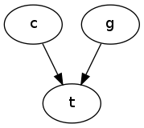
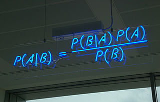
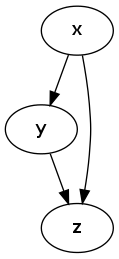
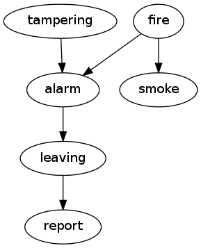
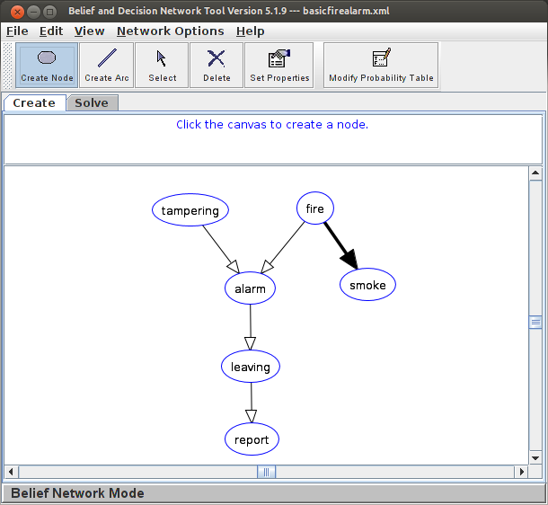
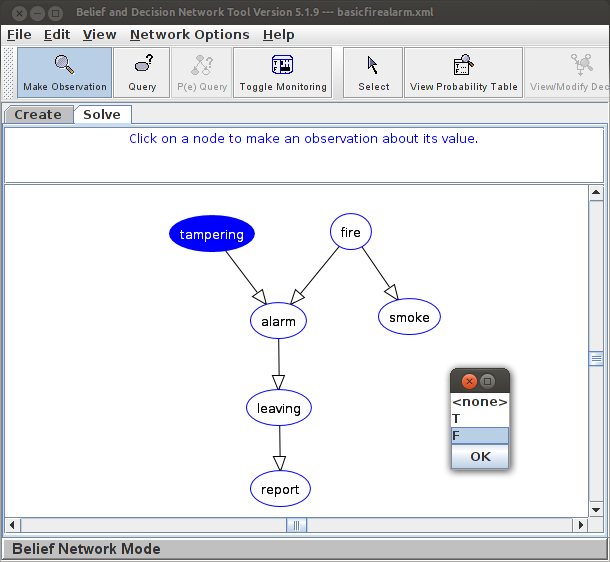
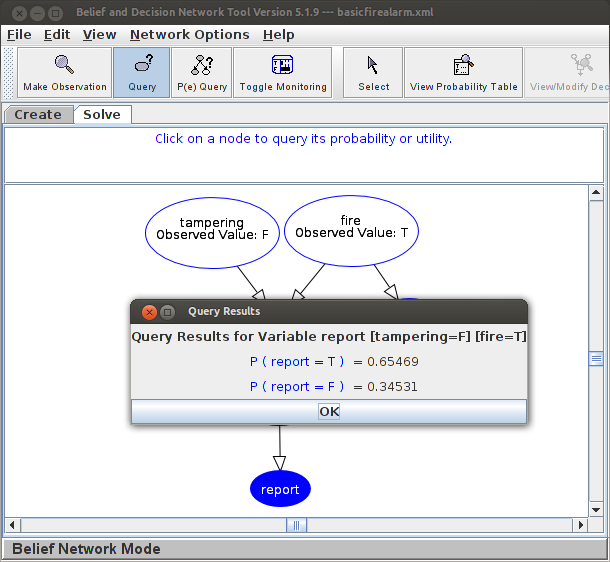
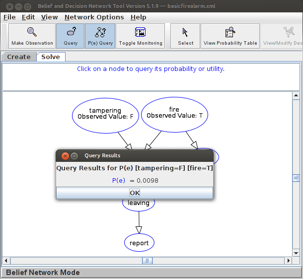
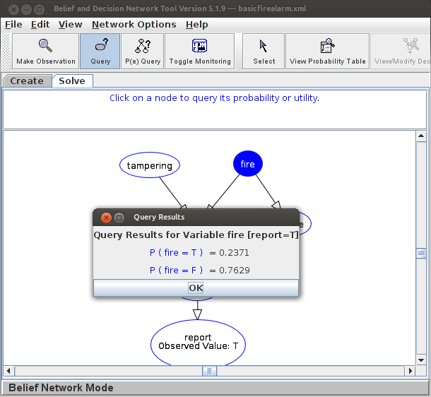

Bayesian inference
Table of Contents
Summary
- \(P(a|b) = P(b|a)P(a)/P(b)\) is Bayes' formula ("Bayes' rule", "Bayes' theorem"); it is just a rewrite of the rules of probability. It is required that \(P(b) \neq 0\).
- Sometimes, we only want to know if \(P(h_1|e) > P(h_2|e)\) (probability of hypothesis 1 is greater than probability of hypothesis 2, given the evidence). Then we only have to compare \(\alpha P(e|h_1)P(h_1)\) vs. \(\alpha P(e|h_2)P(h_2)\), where \(\alpha = 1/P(e)\), which we never need to calculate.
- \(P(h)\) is the "prior" of a hypothesis (cause/explanation) \(h\).
- \(P(h|e)\) is the "posterior" of \(h\), given evidence \(e\) is observed.
Imagine building an expert system for medical diagnosis. You may include a rule like,
hasToothache(X) :- hasCavity(X).
The problem is that not every toothache is caused by a cavity. You may expand it thus,
hasToothache(X) :- hasCavity(X). hasToothache(X) :- hasGumDisease(X). hasToothache(X) :- hasAbscess(X). hasToothache(X) :- hadTeethDrilledByAliens(X). ...
Now there are three different possible causes of the toothache. Yet still, some are missing. And cavities do not always cause toothaches. And a person may have both a cavity and an abscess. How do we deal with all these qualifications?
One answer is to use probabilistic reasoning. We will be able to say that cavities cause toothaches only some percentage of the time, and furthermore that having both a toothache and red, swollen gums makes gum disease more likely and a cavity less likely (observing swollen gums counts against the cavity diagnosis).
Russell and Norvig (from the textbook) provide three good reasons why we might choose to use probabilistic reasoning rather than logic-based reasoning for the medical domain:
- Laziness: It is too much work to list the complete set of antecedents or consequents needed to ensure an exceptionless rule and too hard to use such rules.
- Theoretical ignorance: Medical science has no complete theory for the domain.
- Practical ignorance: Even if we know all the rules, we might be uncertain about a particular patient because not all the necessary tests have been or can be run.
The basics
We'll use propositional logic to represent we can be true or false. Then, with the \(P()\) notation, we'll be able to talk about the probability of whether something is true or false.
| Notation | Meaning |
|---|---|
| \(P(a)\) | The probability that \(a\) (a proposition) is true |
| \(P(a \wedge b)\) | The probability that both \(a\) and \(b\) are true |
| \(P(\neg a)\) | The probability that \(a\) is false |
| \(P(a \vert{} b)\) | The probability that \(a\) is true if \(b\) is assumed to be true |
| Rule | Explanation |
|---|---|
| \(0 \leq P(a) \leq 1\) | A probability is always between \(0\) and \(1\). |
| \(P(a) = 1.0 - P(\neg a)\) | The probability of something being true and the probability of the opposite add up to \(1\). |
| \(P(a \wedge b) = P(a \vert{} b) P(b)\) | The probability of two statements being true simultaneously equals the probability that one is true, assuming the other already is known to be true, times the probability that the other is true (i.e., no longer assuming it is). |
| \(P(a \vee b) = P(a) + P(b) - P(a \wedge b)\) | The probability of either of two statements being true equals the sum of the probabilities that either is true separately minus the probability they are both true simultaneously. |
Causal graphs
Sometimes, like in medical diagnosis, we want to think about the propositions as events or causes. For example,
| Proposition | Interpretation |
|---|---|
| \(t\) | This person has a toothache. |
| \(c\) | This person has a cavity. |
| \(g\) | This person has gum disease. |
We can specify how diseases cause symptoms:

This graph shows us that having a cavity somehow influences the chance that a toothache is also present. This is what we expect (and that's why I put the arrows in the graph).
This means that it should be the case that,
| Suppose that… | Interpretation |
|---|---|
| \(P(t) \neq P(t \vert{} c)\) | Knowing that a person has a cavity changes the probability that the person has a toothache. |
On the other hand, consider,
| Suppose that… | Interpretation |
|---|---|
| \(P(r) = P(r \vert{} c)\) | Knowing that a person has a cavity does not change the probability that the person has red hair. |
We will say that \(P(c|g) = P(c)\) and likewise \(P(g|c) = P(g)\) — that is, having a cavity does not change the chance of having gum disease, and vice versa. We claim that they are independent events.
Let's flesh out the probabilities for the toothache:
| \(T\) | \(C\) | \(G\) | Probability of \(P(T \vert{} C \wedge G)\) |
|---|---|---|---|
| \(t\) | \(c\) | \(g\) | \(P(t \vert{} c \wedge g) = 1.0\) (ouch!) |
| \(t\) | \(c\) | \(\neg g\) | \(P(t \vert{} c \wedge \neg g) = 0.6\) |
| \(t\) | \(\neg c\) | \(g\) | \(P(t \vert{} \neg c \wedge g) = 0.3\) |
| \(t\) | \(\neg c\) | \(\neg g\) | \(P(t \vert{} \neg c \wedge \neg g) = 0.05\) |
| \(\neg t\) | … | … | (just \(1.0\) minus the other rows) |
We'll also need to know the chance of having a cavity and, separately, the chance of having gum disease:
- \(P(c) = 0.10\)
- \(P(g) = 0.05\)
To calculate \(P(t)\), that is, the probability of having a toothache for whatever reason, we have to "condition" across all the possible causes:
\begin{equation} \begin{aligned} P(t) =& P(t|c \wedge g)P(c \wedge g) \\ &+ P(t|c \wedge \neg g)P(c \wedge \neg g) \\ &+ P(t|\neg c \wedge g)P(\neg c \wedge g) \\ &+ P(t|\neg c \wedge \neg g)P(\neg c \wedge \neg g) \\ =& P(t|c \wedge g)P(c)P(g) \\ &+ P(t|c \wedge \neg g)P(c)P(\neg g) \\ &+ P(t|\neg c \wedge g)P(\neg c)P(g) \\ &+ P(t|\neg c \wedge \neg g)P(\neg c)P(\neg g) \\ =& 1.0*0.10*0.05 \\ &+ 0.6*0.10*(1.0-0.05) \\ &+ 0.3*(1.0-0.10)*0.05 \\ &+ 0.05*(1.0-0.10)*(1.0-0.05) \\ =& 0.11825 \end{aligned} \end{equation}If our tables are true, then the chance of some random person having a toothache, assuming you know nothing about their dental history, is 11.8%.
Bayesian inference
We can derive some other rules using just a little algebra:
| Derived | Notes |
|---|---|
| \(P(a \wedge b) = P(b \wedge a)\) | Due to normal Boolean logic rules. |
| \(P(a \vert{} b) P(b) = P(b \vert{} a) P(a)\) | Due to rule regarding \(P(a \wedge b)\). |
| \(P(a \vert{} b) = \frac{P(b \vert{} a) P(a)}{P(b)}\) | Bayes' formula. Of course, it must be that \(P(b) \neq 0\). |
That last derivation is especially interesting to us. Somebody else thought so, too (from Wikipedia):
{kind=link}

Figure 1: Bayes' formula
Why is it interesting? Think about the medical diagnosis problem again.
| Probability | Interpretation |
|---|---|
| \(P(t \vert{} c \wedge \neg g) = 0.6\) | If someone has a cavity and no gum disease, there is a 60% chance they have a toothache. |
| \(P(t \vert{} \neg c \wedge g) = 0.3\) | If someone has gum disease and no cavities, there is a 30% chance they have a toothache. |
| \(P(c \vert{} t) = ??\) | If somebody has a toothache, what is the chance they have a cavity? |
This last row in the table is a very important question. It's asking us to determine the cause, given the effect.
Here is the calculation, given by Bayes' formula:
\begin{equation} \begin{aligned} P(c|t) =& P(t|c)P(c) / P(t)\\ =& (P(t|c \wedge g)P(g) + P(t|c \wedge \neg g)P(\neg g))P(c) / P(t) \\ =& (1.0*0.05 + 0.6*(1.0-0.05))*0.10 / 0.11825 \\ =& 0.5243 \end{aligned} \end{equation}Suppose we want to compare this probability with \(P(g|t)\), that is, the chance that the person has gum disease.
Then we really want to know whether or not,
\begin{equation} P(c|t) > P(g|t) \equiv \frac{P(t|c)P(c)}{P(t)} > \frac{P(t|g)P(g)}{P(t)} \equiv P(t|c)P(c) > P(t|g)P(g) \end{equation}Notice the common term, \(P(t)\). This means if we only want to figure out which is more likely, cavity or gum disease, given that the person has a toothache, we don't care how common toothaches are in general (\(P(t)\)).
Thus, we often write \(\alpha\) for the denominator and just never calculate it:
\begin{equation} P(c|t) > P(g|t) ? \quad \begin{aligned} P(c|t) =& \alpha P(t|c)P(c) \\ P(g|t) =& \alpha P(t|g)P(g) \end{aligned} \end{equation}More complicated cases
Suppose have the following causal graph:

We'll need to give the conditional probabilities of all the nodes with parents, and the unconditional (a priori) probabilities of the node without a parent (\(x\)).
Table for \(z\):
| \(Z\) | \(Y\) | \(X\) | Probability of \(P(Z \vert{} Y \wedge X)\) |
|---|---|---|---|
| \(z\) | \(y\) | \(x\) | \(P(z \vert{} y \wedge x) = 0.3\) |
| \(z\) | \(y\) | \(\neg x\) | \(P(z \vert{} y \wedge \neg x) = 0.8\) |
| \(z\) | \(\neg y\) | \(x\) | \(P(z \vert{} \neg y \wedge x) = 0.4\) |
| \(z\) | \(\neg y\) | \(\neg x\) | \(P(z \vert{} \neg y \wedge \neg x) = 0.9\) |
Table for \(y\):
| \(Y\) | \(X\) | Probability of \(P(Y \vert{} X)\) |
|---|---|---|
| \(y\) | \(x\) | \(P(y \vert{} x) = 0.3\) |
| \(y\) | \(\neg x\) | \(P(y \vert{} \neg x) = 0.1\) |
Table for \(z\):
| \(X\) | Probability of \(P(X)\) |
|---|---|
| \(x\) | \(P(x) = 0.4\) |
Now, what is \(P(z \wedge \neg y \wedge x)?\). Basically, you calculate the probability of each node given its parents. It's a relatively simple process:
\begin{equation} \begin{aligned} P(z \wedge \neg y \wedge x) =& P(z | \neg y \wedge x)P(\neg y \wedge x) \\ =& P(z | \neg y \wedge x)P(\neg y | x)P(x) \\ =& 0.4 * (1.0-0.3) * 0.4 \\ =& 0.112 \end{aligned} \end{equation}What if we don't know (or care) about the value of \(x\)? Then we have,
\begin{equation} \begin{aligned} P(z \wedge \neg y) =& P(z \wedge \neg y | x)P(x) + P(z \wedge \neg y | \neg x)P(\neg x) \\ =& P(z | \neg y \wedge x)P(\neg y | x)P(x) + P(z | \neg y \wedge \neg x)P(\neg y | \neg x)P(\neg x) \\ =& 0.4 * (1.0 - 0.3) * 0.4 + 0.9 * (1.0 - 0.1) * (1.0 - 0.4) \\ =& 0.598 \end{aligned} \end{equation}Here's another example. This one models the causes of a possible report of a fire alarm and a possible report of smoke.

Table for \(report\) ("did somebody report an alarm?"):
| \(report\) | \(leaving\) | \(P(report \vert{} leaving)\) |
|---|---|---|
| true | true | \(0.75\) |
| true | false | \(0.01\) |
Table for \(leaving\) ("are people leaving the building?"):
| \(leaving\) | \(alarm\) | \(P(leaving \vert{} alarm)\) |
|---|---|---|
| true | true | \(0.88\) |
| true | false | \(0.0\) |
Table for \(alarm\) ("is there a fire alarm sounding?"):
| \(alarm\) | \(tampering\) | \(fire\) | \(P(alarm \vert{} tampering \wedge fire)\) |
|---|---|---|---|
| true | true | true | \(0.50\) |
| true | true | false | \(0.85\) |
| true | false | true | \(0.99\) |
| true | false | false | \(0.0\) |
Table for \(tampering\) ("did somebody tamper with the fire alarm?"):
| \(tampering\) | \(P(tampering)\) |
|---|---|
| true | \(0.02\) |
Table for \(fire\) ("is there a fire?"):
| \(fire\) | \(P(fire)\) |
|---|---|
| true | \(0.01\) |
Table for \(smoke\) ("is there smoke?"):
| \(smoke\) | \(fire\) | \(P(smoke \vert{} fire)\) |
|---|---|---|
| true | true | \(0.90\) |
| true | false | \(0.01\) |
Now, suppose there is a fire and the alarm was not tampered with. What is the probability that somebody will report a fire? Notice that people have to leave the building before somebody will report the fire.
Let,
- \(report=T \equiv r\), \(report=F \equiv \bar{r}\)
- \(leaving=T \equiv l\), \(leaving=F \equiv \bar{l}\)
- \(alarm=T \equiv r\), \(alarm=F \equiv \bar{r}\)
- \(tampering=T \equiv t\), \(tampering=F \equiv \bar{t}\)
- \(fire=T \equiv f\), \(fire=F \equiv \bar{f}\)
Ok, here we go!
\begin{equation} \begin{aligned} P(r | \bar{t} \wedge f) =& P(r | l \wedge \bar{t} \wedge f)P(l | \bar{t} \wedge f) \\ &+ P(r | \bar{l} \wedge \bar{t} \wedge f)P(\bar{l} | \bar{t} \wedge f) \\ =& P(r | l \wedge \bar{t} \wedge f)(P(l | a \wedge \bar{t} \wedge f)P(a | \bar{t} \wedge f) + P(l | \bar{a} \wedge \bar{t} \wedge f)P(\bar{a} | \bar{t} \wedge f)) \\ &+ P(r | \bar{l} \wedge \bar{t} \wedge f)(P(\bar{l} | a \wedge \bar{t} \wedge f)P(a | \bar{t} \wedge f) + P(\bar{l} | \bar{a} \wedge \bar{t} \wedge f)P(\bar{a} | \bar{t} \wedge f)) \\ =& P(r | l)(P(l | a)P(a | \bar{t} \wedge f) + P(l | \bar{a})P(\bar{a} | \bar{t} \wedge f)) \\ &+ P(r | \bar{l})(P(\bar{l} | a)P(a | \bar{t} \wedge f) + P(\bar{l} | \bar{a})P(\bar{a} | \bar{t} \wedge f)) \\ =& 0.75*(0.88*0.99 + 0.0*0.01) + 0.01*(0.12*0.99 + 1.0*0.01) \\ =& 0.655 \end{aligned} \end{equation}Wow, that was painful. It could be much worse. We didn't even uses Bayes' formula in that derivation, because we never needed to "reverse" the causal arrows in the graph.
If we asked instead, "what is the chance there is a fire when somebody reports a fire?" then we would need Bayes' formula.
Some helpful software
Let's use some software to perform these calculations for us. Visit AISpace, specifically the Belief and Decision Networks page. Download the Java program.
Start it up, and you see this:
Click "File > Load Sample Problem" and choose "Fire Alarm Belief Network." Now you have this:

Click the "Solve" tab. Choose the "Make Observation" tool button. Then, click the "tampering" node and choose "F" (false):

Do the same for the "fire" node but select "T" (true).
We have set the assumed/observed events. Now we want to know, what is the chance of a report of a fire? I.e., we want to know, \(P(report=T|tampering=F \wedge fire=T)\)?
Click the "Query" tool and then click the "report" node. Select "Brief".

You get \(P(report=T|tampering=F \wedge fire=T) = 0.655\) just as we calculated.
Next, we'll ask "how likely is the observation?" I.e., what is \(P(tampering=F \wedge fire=T)\)?
This is easy. After the observations have been set, just click the "P(e) Query" tool (which means "probability of the evidence" a.k.a. the observations).

So, it seems \(P(tampering=F \wedge fire=T)=0.0098\). This is easy to verify:
\(P(tampering=F \wedge fire=T) = P(tampering=F)P(fire=T) = (1.0-0.02)*0.01 = 0.0098\).
Finally, we'll ask for a Bayesian inference. Clear the observations (set the observations to "<none>" for the "tampering" and "fire" nodes).
Then, make a "T" observation for "report." Then query the "fire" node.

It seems that the chance of a fire if somebody reports it is 23.7%.